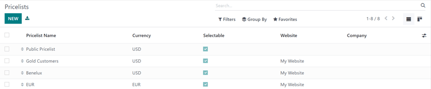
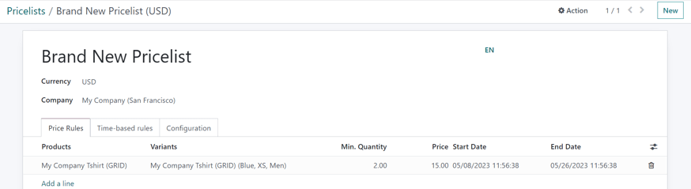
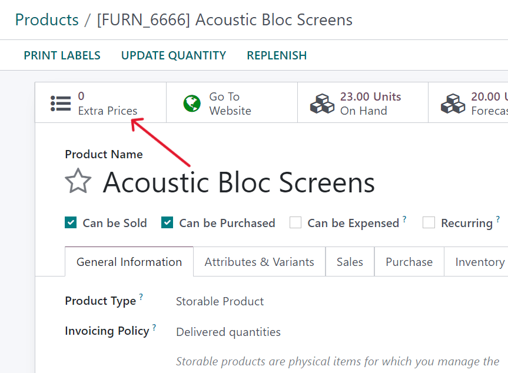
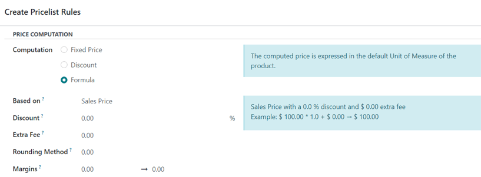
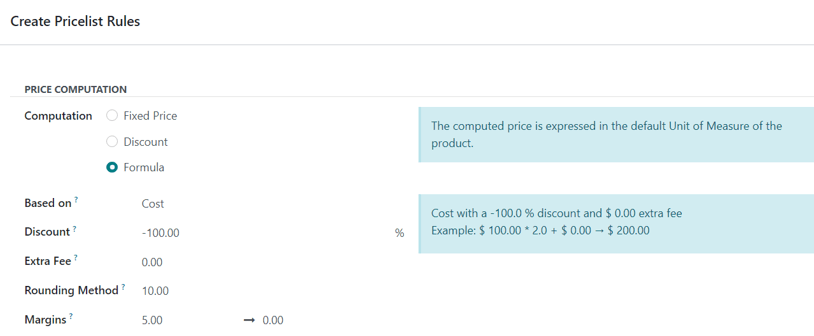
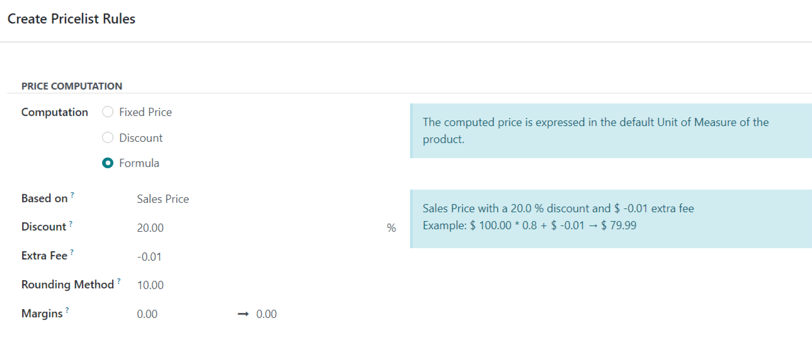

รายการราคาส่วนลดและสูตร¶
Odoo* Sales* มีฟังก์ชันราคาที่มีประโยชน์ซึ่งสามารถปรับแต่งให้เหมาะสมกับทุกชนิดกลยุทธ์การกำหนดราคาที่ไม่เหมือนใคร
A * pricelist * คือรายการราคา (หรือกฎราคา) ที่ Odoo ใช้กำหนดราคาที่เหมาะสมสำหรับลูกค้า รายการราคาเหล่านี้สามารถตั้งค่ามีเกณฑ์เฉพาะ (เช่น ระยะเวลา ปริมาณการขายขั้นต่ำ และเพิ่มเติม) เพื่อใช้กับราคาหรือส่วนลดบางอย่าง
รายการราคาแนะนำราคาบางอย่าง แต่สามารถใช้ได้ในใบสั่งขาย
ตัวเลือกกลยุทธ์ราคา¶
หากต้องการเลือกกลยุทธ์การกำหนดราคา โปรดไปที่: ส่วนเมนู: "แอปพลิเคชันการขาย"--> การกำหนดค่า --> การตั้งค่า ใน: guilabel: "ราคา" ส่วน คลิก: guilabel: ช่องทำเครื่องหมายถัดจากคุณสมบัติ "Price List"
การทำเช่นนี้เปิดเผยสองตัวเลือกเพิ่มเติมภายใต้มัน:: guilabel:` หลายราคาต่อผลิตภัณฑ์" และ: guilabel: "กฎราคาขั้นสูง (ส่วนลด,สูตร) นอกจากนี้ยังมีลิงก์ที่เรียกว่า pricelist ที่ชี้ไปที่ไปที่หน้า pricelist แยกต่างหากซึ่งคุณสามารถสร้าง pricelist และ / หรือได้รับการปรับปรุง
: guilabel: "หลายราคาต่อผลิตภัณฑ์": มีตัวเลือกในการตั้งค่าหลายราคาสินค้าแต่ละชนิดมีราคาแตกต่างกัน
:guilabel:` กฎราคาขั้นสูง (ส่วนลดสูตร) `: มีตัวเลือกสร้างกฎราคาโดยละเอียดและใช้ส่วนลดกำไรและการปัดเศษ
หลังจากคลิกที่: guilabel: ช่องทำเครื่องหมายถัดจากคุณลักษณะ "Pricelines",เลือกหนึ่งในสองตัวเลือกและคลิกที่: guilabel: "บันทึก" เพื่อบันทึกทั้งหมดการเปลี่ยนแปลง
รายการราคา¶
หลังจากเปิดใช้งานและบันทึก: guilabel: ฟังก์ชั่น "Pricelines"settings โหลดหน้าเว็บแล้วเลือกจากที่นี่: guilabel: "Pricelines" ลิงค์ (ตั้งอยู่ใต้: guilabel: "Pricelines"):guilabel:`setting`page) หรือไปที่:menuselection:`salesapp-->ผลิตภัณฑ์ -> รายการราคา
ตัวเลือกใด ๆ จะปรากฏขึ้น: guilabel: หน้า "รายการราคา" ซึ่งรายการราคาจะปรากฏขึ้นสามารถสร้างและ/หรือปรับเปลี่ยนได้ตลอดเวลา
Important
: guilabel: ลำดับรายการราคาในหน้า "Pricelines" มีผลกระทบเกี่ยวกับวิธีการนำมาประยุกต์ใช้ ถ้ารายการราคาหลายรายการใช้มาตรฐานเดียวกันร่วมกัน** เท่านั้น ** สมัครรายการราคาแรก
ยกตัวอย่างเช่น สำหรับรายการราคา 2 รายการที่มีกติกาแตกต่างกัน แต่มีมาตรฐานเดียวกัน(เช่นเว็บไซต์เดียวกันประเทศเดียวกัน) รายการเฉพาะ * รายการแรก * รายการราคาในรายการใบสมัคร
Note
:guilabel:`public price list' คือราคาเริ่มต้นที่ Odoo ใช้* การขาย * และ * อีคอมเมิร์ซ * ใช้รายการราคานี้เป็นค่าเริ่มต้นหากไม่มีหลักเกณฑ์ที่ตรงกัน
Note
ใน Odoo 17 (ขึ้นไป) ไม่จำเป็นต้องป้อนรายการราคาอีกต่อไปยืนยันใน: guilabel: "Pricelines" ฟิลด์ในใบเสนอราคามัน (นั่นคือการแปลงเป็นคำสั่งขาย)
ควรสังเกตว่าใน Odoo 17 (และข้างต้น) ส่วนการแชทสามารถทำได้สามารถพบได้ในรายการราคาซึ่งช่วยเพิ่มขีดความสามารถในการสื่อสารพวกเขานอกจากนี้ ควรทราบด้วยว่า ใน Odoo 17 (และใหม่กว่า) มีส่วนช่องแชทในแบบฟอร์มรายการราคา ซึ่งจะช่วยเพิ่มความสามารถในการสื่อสารเกี่ยวกับเรื่องดังกล่าวได้
จาก: guilabel: หน้า "รายการราคา" เลือกรายการราคาที่ต้องการแก้ไขหรือคลิกที่: guilabel: "ใหม่" เพื่อสร้างรายการราคาใหม่ที่แสดงแบบฟอร์มรายการราคาเปล่าที่สามารถกำหนดค่าได้หลายวิธี
เมื่อสร้างรายการราคาใหม่ ก่อนอื่นให้เพิ่มชื่อในรายการราคาที่ช่องว่างที่ด้านบนของฟอร์ม ต่อไป เลือก: guilabel: ควรใช้ "เงิน"
เลือก บริษัท นี้หากทำงานในสภาพแวดล้อมหลายบริษัทรายการราคาควรใช้กับ: guilabel: ฟิลด์ "บริษัท" หากสนามนี้เป็นหากปล่อยให้ว่างเปล่ารายการราคาจะถูกนำไปใช้โดยอัตโนมัติกับฐานข้อมูล
แท็บกฎราคา¶
ในแบบฟอร์มรายการราคา: guilabel: แท็บ "กฎราคา" ฟังก์ชั่นแตกต่างกันไปขึ้นอยู่กับการเลือก: guilabel: "รายการราคา" การตั้งค่า: ไม่:guilabel:`หลายราคาต่อผลิตภัณฑ์'หรือ:guilabel:`กฎราคาพรีเมี่ยม(ส่วนลดสูตร)
แต่: guilabel: "กฎตามเวลา" แท็บและ: guilabel: "การกำหนดค่า" แท็บแท็กเหมือนกันเสมอไม่ว่าจะเลือกอะไร: guilabel: `pricelist `ตั้ง
หลากหลายราคาต่อผลิตภัณฑ์¶
เปิดใช้งาน: guilabel: "หลายราคาต่อผลิตภัณฑ์" หลังจากการตั้งค่า: guilabel: ตัวเลือกเพิ่มเติมมีอยู่ในแท็บ "กฎราคา" ในแบบฟอร์มรายการราคาเพิ่มผลิตภัณฑ์เฉพาะในราคาเฉพาะลงในรายการราคา
หากต้องการเพิ่มผลิตภัณฑ์และราคาเฉพาะลงในแบบฟอร์มรายการราคา คลิก: guilabel: แท็บ "กฎราคา" จากนั้นไปที่: guilabel: คอลัมน์ "สินค้า" จากนั้นเลือกผลิตภัณฑ์ที่ต้องการควรใช้ราคาที่เฉพาะเจาะจง
ต่อไปถ้าจำเป็นให้เลือกตัวแปรผลิตภัณฑ์ใต้: guilabel:` ตัวแปรคอลัมน์ (เช่นขนาดผลิตภัณฑ์สี ฯลฯ ) หากไม่มีตัวแปรหลังจากเลือกแล้วราคานี้จะใช้ได้กับทุกรูปแบบของผลิตภัณฑ์
หากต้องซื้อขั้นต่ำจึงจะสมัครได้ราคาเฉพาะป้อนจำนวนเงินภายใต้คอลัมน์: guilabel: `ปริมาณขั้นต่ำ'
ในการกำหนดค่าราคาของผลิตภัณฑ์ตามรายการราคาเฉพาะนี้ โปรดป้อนกรอกจำนวนเงินที่ต้องการใต้: guilabel: "ราคา" คอลัมน์ จากนั้น ยังมีตัวเลือกเพิ่ม: guilabel: "วันเริ่มต้น" และ: guilabel: "วันสิ้นสุด" ไปยังราคาผลิตภัณฑ์สามารถกำหนดค่าได้หากต้องการ
หากต้องการเพิ่มไลน์ผลิตภัณฑ์อื่นให้คลิกอีกครั้ง: guilabel: "เพิ่มไลน์" และทำซ้ำกระบวนการ ไม่จำกัดจำนวนสินค้าที่สามารถเพิ่มได้: guilabel: แท็บ "กฎราคา" ของแบบฟอร์มรายการราคา
สำหรับข้อมูลเพิ่มเติมโปรดตรวจสอบส่วนต่อไปนี้:อ้าง:`หลายราคาแต่ละผลิตภัณฑ์ < ยอดขาย / หลายราคาต่อผลิตภัณฑ์>
กฎราคาขั้นสูง¶
ใช้: guilabel: "กฎราคาขั้นสูง (ส่วนลดสูตร)" การตั้งค่าเมื่อเปิดใช้งานแล้วในแบบฟอร์มรายการราคา: guilabel: แท็บ "กฎราคา" มีให้ตัวเลือกในการกำหนดค่ากฎราคาโดยละเอียดตามสูตร
ดู: อ้าง:` กฎราคาขั้นสูง (ส่วนลดสูตร)สำหรับขั้นตอนโดยละเอียดเกี่ยวกับวิธีการเพิ่มโปรดดูที่ส่วน "กฎการขาย / ราคาพรีเมี่ยม"เปรียบเทียบกฎราคากับรายการราคา
แท็บ "ราคาปกติ"¶
ราคาปกติทุ่มเทสำหรับ: doc:` สมัครสมาชิกผลิตภัณฑ์<../../../ สมัครสมาชิก / ผลิตภัณฑ์ > `.
ภายใต้: guilabel: "ราคาปกติ" แท็บ: guilabel: มีแท็บ "กฎราคา" ความแตกต่างเพียงอย่างเดียวคือ aช่วงเวลาการทำซ้ำสามารถนำมาใช้กับ: guilabel: `แผนซ้ำคอลัมน์
เมื่อเลือก: guilabel: "ผลิตภัณฑ์" และ / หรือ: guilabel: "รูปแบบผลิตภัณฑ์",คลิก: guilabel: `เพิ่มกฎราคา' และเลือก: guilabel: คอลัมน์ "ตารางปกติ" แสดงเมนูแบบเลื่อนลงที่ก่อนการรักษา -วงจรการทำซ้ำที่ระบุ (เช่น "รายเดือน", "รายไตรมาส", "รายสัปดาห์" เป็นต้น)
นอกจากนี้ยังสามารถสร้างวงจรการทำซ้ำใหม่ได้จากคอลัมน์นี้ สำหรับสิ่งนี้พิมพ์ในชื่อใหม่: guilabel: "แผนปกติ" จากนั้นเลือก: guilabel: สร้างเวลาจากเมนูแบบเลื่อนลงที่สร้างขึ้นระหว่างนั้นสามารถแก้ไขได้ในภายหลัง
หรือเลือก: guilabel: สร้างและแก้ไข ... ` แสดง a:guilabel: สร้างวางแผนแบบป๊อปอัพอย่างสม่ำเสมอ จากแบบฟอร์มแบบป๊อปอัพนี้กำหนดการปกติใหม่วงจรสามารถกำหนดค่าเฉพาะ: guilabel: `detail',: guilabel: "บริการตนเอง" และ: guilabel: ตัวเลือก "ราคา" เมื่อเมื่อการกำหนดค่าเสร็จสิ้นคลิกที่: guilabel: "บันทึกและปิด" ปุ่ม

ในที่สุด ใน: guilabel: คอลัมน์ "ราคาปกติ"
See also
：doc:`../.// สมัครสมาชิก
แท็บกฎการเช่า¶
ใน: guilabel: แท็บ "กฎการเช่า" สามารถดูกฎราคาเฉพาะได้กำหนดค่าสำหรับผลิตภัณฑ์เช่าต่างๆโดยใช้การเชื่อมต่อกับ: guilabel: "กฎราคา" และ: guilabel: "ราคาปกติ" แท็บ
หากต้องการเพิ่มกฎการเช่า คลิก: guilabel: "เพิ่มบรรทัด" และเลือกสิ่งที่คุณต้องการสินค้าอยู่ใน: guilabel: "ผลิตภัณฑ์" แถบ จากนั้นเลือกอะไรที่เฉพาะเจาะจง: guilabel: "ตัวแปร" หากจำเป็น
ถัดไปกำหนดหนึ่งสำหรับกฎการเช่า: guilabel: "ช่วงเวลา" (เช่น`รายวันรายชั่วโมง ฯลฯ )
ในที่สุดกำหนดค่าหนึ่งสำหรับกฎการเช่าในแอปพลิเคชันที่เกี่ยวข้อง: guilabel: "ราคา"คอลัมน์
กำหนดค่าแท็ก¶
ภายใต้: guilabel: Configuration แท็บมีหลายตัวเลือกที่สามารถรายการราคาที่กำหนดเองเพิ่มเติม

เริ่มต้นที่นี่ใน: guilabel: "การใช้งาน" ส่วนภายใต้: guilabel: ฟิลด์ "กลุ่มประเทศ" ที่สามารถเพิ่มกลุ่มประเทศบางส่วนไปยังรายการราคา ไม่จำกัดจำนวนกลุ่มประเทศที่สามารถเพิ่มได้สนามนี้
Note
หากไม่มีการกำหนดประเทศให้กับลูกค้า Odoo จะใช้รายการราคาแรกกลุ่มชาติใด
ใน: guilabel: "เว็บไซต์" ส่วนที่มีหลายตัวเลือกที่สามารถกำหนดค่าแล้ว ใน: guilabel: "เว็บไซต์" ฟิลด์รายการราคานี้สามารถใช้ได้เยี่ยมชมเว็บไซต์เฉพาะถ้าทำงานในสภาพแวดล้อมหลายเว็บไซต์ หากปล่อยให้หากว่างเปล่ารายการราคาจะถูกนำไปใช้กับเว็บไซต์ทั้งหมดในฐานข้อมูล
ติ๊ก: guilabel: "เลือกได้" ช่องทำเครื่องหมายเพื่อให้รายการราคานี้เป็นตัวเลือกเสริมที่ลูกค้าสามารถเลือกได้เมื่อซื้อสินค้า หาก: guilabel: 'optional' กล่องยังไม่ถูกเลือก ลูกค้า ** ไม่สามารถ ** เลือกนี่คือรายการราคาของพวกเขาเอง
สุดท้ายคุณสามารถเลือกที่จะเพิ่มหนึ่ง: guilabel:` โปรโมชั่นอีคอมเมิร์ซรหัส เพื่อเพิ่มรหัส, พิมพ์รหัสโปรโมชั่นที่ต้องการ, หลังจากป้อนใช้รายการราคากับลูกค้าในระหว่างขั้นตอนการชำระเงิน แม้ว่าลูกค้าไม่ผ่านเกณฑ์ที่กำหนดไว้ก่อนหน้านี้
จากนั้นใน: guilabel: `discount' ส่วนที่มีหนึ่ง: guilabel: `discountฟิลด์ "นโยบาย" มีสองตัวเลือกให้เลือก:: guilabel: "รวมส่วนลด"ในราคาหรือ: guilabel: แสดงราคาและส่วนลดให้กับลูกค้า
หาก: guilabel: เลือก "รวมส่วนลดไว้ในราคา" แสดงราคาลูกค้าได้พิจารณาส่วนลดที่สมัครไว้แล้ว อย่างไรก็ตาม หาก: guilabel: เลือก "แสดงราคาและส่วนลดให้กับลูกค้า"ลูกค้าเห็นราคาเปิดจริง * และ * พวกเขาประหยัดเงินได้เท่าไหร่ส่วนลดรายการราคานี้
แอปพลิเคชัน Pricelist ของลูกค้า¶
และรายการราคาเริ่มต้นที่ใช้กับลูกค้าใด ๆ คือ: guilabel: `สาธารณะPricelist, Odoo เสนอการใช้งานที่แตกต่างกันโดยตรงจัดทำรายการราคาให้กับลูกค้าในแบบฟอร์มติดต่อลูกค้า
เพื่อเปิดแบบฟอร์มการติดต่อของลูกค้าที่ต้องการโดยการนำทางไปที่: menuselection: "แอปพลิเคชันการขาย -> คำสั่งซื้อ -> ลูกค้า" จากนั้นเลือกลูกค้าจากหน้าแรก: guilabel: หน้า "ลูกค้า" หรือคลิกชื่อลูกค้าในใบสั่งขาย

ในแบบฟอร์มติดต่อของลูกค้าที่ต้องการภายใต้แท็ก: "ขาย" &แท็บ "ซื้อ" ใน: guilabel: "ขาย" ส่วนที่ระบุรายการราคาเมนูแบบเลื่อนลงที่ควรใช้กับลูกค้ารายนี้โดยเฉพาะ: guilabel: ฟิลด์ "ราคา"

Note
เมื่อลูกค้าถูกเพิ่มลงในฐานข้อมูลรายการราคาเริ่มต้นคือนำไปใช้กับพวกเขาโดยอัตโนมัติ **เป็นไปไม่ได้ **มีช่องว่าง* Pricelines * ฟิลด์ในแบบฟอร์มการติดต่อ แม้ว่าฟิลด์จะว่างเปล่าเมื่อเปิดแบบฟอร์มติดต่อนี้อีกครั้งรายการราคาเริ่มต้นจะปรากฏขึ้น
อย่างไรก็ตาม เมื่อมีการเพิ่มผู้ติดต่อรายนี้ลงในใบเสนอราคา,*รายการราคา*ฟิลด์จะถูกเติมโดยอัตโนมัติ (ขึ้นอยู่กับข้อมูลในแบบฟอร์มการติดต่อของพวกเขา)รายการราคาที่จองไว้นี้สามารถลบออกจากฟิลด์ * pricelist * และข้อเสนอยังคงสามารถยืนยันได้และต่อมาเปลี่ยนเป็นการขายใบสั่ง
หลากหลายราคาต่อผลิตภัณฑ์¶
หากต้องการใช้หลายราคาสำหรับแต่ละผลิตภัณฑ์ โปรดเลือก: guilabel: หลังจากเปิดใช้งานตัวเลือก "หลายราคาต่อผลิตภัณฑ์": guilabel: * ขาย * คุณสมบัติ "ราคา" ในหน้าการตั้งค่าแอป(:menusesection:` แอปพลิเคชันการขาย -> การกำหนดค่า -> การตั้งค่า ') และคลิก: guilabel: "บันทึก".
จากนั้นใช้แบบฟอร์มผลิตภัณฑ์เพื่อใช้รายการราคากับผลิตภัณฑ์เฉพาะ นำทางไปที่: ส่วน menuse: "ขายแอป -> ผลิตภัณฑ์ -> ผลิตภัณฑ์" และเลือกควรนำสินค้าหลายราคามาปรับใช้ เลือกผลิตภัณฑ์จาก: Jibiao: "ผลิตภัณฑ์" หน้าแสดงผลิตภัณฑ์สำหรับผลิตภัณฑ์เฉพาะแบบฟอร์มอยู่ในหน้าแยกต่างหาก
ในแบบฟอร์มผลิตภัณฑ์คลิกที่: guilabel: "ราคาพิเศษ" ปุ่มสมาร์ท,จ่าฝูงของตาราง
การทำเช่นนี้จะแสดงหน้าแยกต่างหากที่แสดง: guilabel: "กฎราคา"เป็นการเฉพาะเจาะจงกับผลิตภัณฑ์นั้นๆ ที่นี่คุณสามารถแก้ไขกฎราคาหรือสร้างได้ทุกเมื่อ

สร้างกฎราคาใหม่สำหรับผลิตภัณฑ์ตามเงื่อนไขเฉพาะต่อไปนี้: guilabel: `ราคาหน้ากฎ, คลิก: guilabel: ใหม่, เพิ่มบรรทัดใหม่ที่ปรับแต่งได้, ซึ่งมีผลิตภัณฑ์ที่ต้องการได้รับการกรอกลงใน: guilabel: คอลัมน์ "Applied On"
ต่อไปที่จะเลือก: guilabel: Pricelines กฎเฉพาะของราคาสินค้าควรใช้ผ่าน: guilabel: เมนูแบบเลื่อนลงในคอลัมน์ "Pricelines"
Note
:guilabel:`public price list' คือราคาเริ่มต้นที่ Odoo ใช้* การขาย * และ * อีคอมเมิร์ซ *
Tip
หากต้องการสร้างรายการราคาใหม่จากหน้านี้ให้พิมพ์ชื่อที่ต้องการสร้างรายการราคาใหม่ใน: guilabel: "Pricelines" คอลัมน์และเลือก: guilabel: เลือก "Create" จากเมนูแบบเลื่อนลง รายการราคาทั้งหมดสามารถแก้ไขได้ตลอดเวลาโดยการนำทางไปที่: menuseection:` ขายแอป -> ผลิตภัณฑ์ ->รายการราคา รายการราคาสามารถสร้างขึ้นจากเนื้อหาเฉพาะนั้นได้: guilabel: หน้า Price List เช่นกันหากต้องการสร้างรายการราคาใหม่จากหน้านี้ ให้พิมพ์ชื่อรายการราคาใหม่ที่ต้องการในคอลัมน์ รายการราคา จากนั้นเลือก สร้าง จากเมนูแบบเลื่อนลง คุณสามารถแก้ไขรายการราคาทั้งหมดได้ตลอดเวลาโดยไปที่ นอกจากนี้ยังสามารถสร้างรายการราคาในหน้า รายการราคา เฉพาะนั้นได้เช่นกัน
หลังจากเพิ่มรายการราคาที่ต้องการในบรรทัดแล้วให้ระบุ a: guilabel: `Minปริมาณของกฎราคา
Example
หาก: guilabel: คอลัมน์ "Min.Quantity" ถูกตั้งค่าเป็น "2" แล้ว: guilabel: แถบ "ราคา" จะใช้สำหรับการสั่งซื้อสินค้าตั้งแต่ 2 ชิ้นขึ้นไปดังนั้นในทางทฤษฎีหากสินค้ามีราคา $ 100 ลูกค้าสามารถส่งเสริมหาก: guilabel: "ราคา" ตั้งไว้ที่ $ 85 ต่อรายการคุณสามารถซื้อเพิ่มเติมได้: guilabel: "ปริมาณขั้นต่ำ" ของผลิตภัณฑ์ "2"หากคอลัมน์ จำนวนขั้นต่ำ ถูกตั้งค่าเป็น 2 ราคาใหม่ในคอลัมน์ ราคา จะถูกนำไปใช้กับคำสั่งซื้อผลิตภัณฑ์ 2 รายการขึ้นไป ดังนั้น ในทางทฤษฎี หากผลิตภัณฑ์หนึ่งรายการมีราคา 100 ดอลลาร์ ลูกค้าจะได้รับการสนับสนุนให้ซื้อมากขึ้น หากกำหนด ราคา ไว้ที่ 85 ดอลลาร์ต่อผลิตภัณฑ์สำหรับ จำนวนขั้นต่ำ ของผลิตภัณฑ์ 2 รายการ
ถัดไปให้ป้อนจำนวนเงินที่ต้องการในคอลัมน์: guilabel: `price' ดังนั้น หากเมื่อต้องการป้อน: guilabel: "วันเริ่มต้น" และ: guilabel: "วันสิ้นสุด"กฎราคาสินค้า
สุดท้ายถ้าทำงานในสภาพแวดล้อมหลายองค์กรให้เลือก บริษัทกฎราคานี้ควรใช้กับ: guilabel: ฟิลด์ "บริษัท"เว้นช่องว่างนี้ไว้แสดงว่ากฎราคาใช้กับทุกบริษัทต่อไปนี้ฐานข้อมูล
คลิกออกจากบรรทัดเพื่อเปิดใช้งานฟังก์ชั่นบันทึกอัตโนมัติของ Odoo ซึ่งหมายความว่ากฎราคาที่สร้างขึ้นใหม่พร้อมใช้งานแล้ว
เพิ่มกฎราคาที่ไม่ซ้ำกันให้มากที่สุดเท่าที่จะเป็นไปได้สำหรับแต่ละผลิตภัณฑ์ตามความต้องการ มีไม่จำกัดว่าจะสามารถเพิ่มราคาเท่าไรต่อสินค้า
ด้วยกฎราคาสินค้าเฉพาะตัวที่วางไว้ลูกค้าที่ลดลงดูราคาใหม่ในรายการราคาที่สอดคล้องกันโดยอัตโนมัติใบสมัคร กฎราคาที่ใช้กับผลิตภัณฑ์เฉพาะ ปริมาณแสดงบน: guilabel: "ราคาพิเศษ" ปุ่มสมาร์ทที่ตั้งอยู่ในแต่ละรูปแบบผลิตภัณฑ์
Note
เมื่อเพิ่มกฎราคา / รายการราคาลงในผลิตภัณฑ์ผ่าน: guilabel:`Extraปุ่มอัจฉริยะราคาก็สะท้อนให้เห็นในรายการราคาในทำนองเดียวกัน เมื่อมีการเพิ่มกฎราคาของสินค้าชนิดใดชนิดหนึ่งลงในรายการราคานอกจากนี้ยังสะท้อนให้เห็นในรูปแบบผลิตภัณฑ์โดย: guilabel: "ราคาพิเศษ"ปุ่มอัจฉริยะ
ส่วนลด¶
The Discounts feature allows the ability to set a discount or increase the price on individual items in a sales order. This is calculated as a percentage of that product's sales price.
ในการเข้าถึงส่วนลดไปที่หน้าการตั้งค่าแอป * การขาย *(:menusesection:` แอปพลิเคชันการขาย -> การกำหนดค่า -> การตั้งค่า ') และคลิก: guilabel: "ส่วนลด" ช่องทำเครื่องหมายและคลิก: guilabel: "บันทึก"
เมื่อเปิดใช้งานการตั้งค่าแล้วนำทางไปยังข้อเสนอที่ต้องการโดยไปที่: ส่วนเมนู: "ขายแอป -> สั่งซื้อ -> ใบเสนอราคา" ที่ด้านบนหน้า เมื่อมาถึงให้คลิกที่ใบเสนอราคาที่ต้องการจากรายการ
ในส่วนบรรทัดการสั่งซื้อของใบเสนอราคาหัวคอลัมน์ใหม่จะเป็นปรากฏแท็ก:guilabel:"disc.%". แถบนี้ใช้สำหรับการตั้งค่าส่วนลดรายการแถวเดียว ป้อนส่วนลดที่จำเป็นสำหรับแต่ละสายผลิตภัณฑ์และจากนั้นราคาใหม่จะถูกคำนวณโดยอัตโนมัติในข้อเสนอ: guilabel: ผลรวมที่ด้านล่างของหน้า
Tip
ส่วนลดยังสามารถเพิ่มลงในใบสั่งขายได้โดยตรงในลักษณะเดียวกันไปที่: ส่วนเมนู: "แอปพลิเคชันการขาย -> การสั่งซื้อ -> การสั่งซื้อ" คลิกต้องการคำสั่งซื้อขายและเพิ่มส่วนลดไปที่: guilabel:disc.% ตามที่ได้ระบุไว้ข้างบน
Tip
guilabel: ค่าบวกสำหรับ "Disc.%" จะได้รับส่วนลด*,ขณะที่ติดลบสามารถนำไปปรับขึ้นราคาได้
กฎราคาขั้นสูง¶
: guilabel: "กฎราคาขั้นสูง (ส่วนลดสูตร)" คุณสมบัติรายการราคามีตัวเลือกในการเปลี่ยนแปลงกฎราคาตามส่วนลดสูตร การเปลี่ยนแปลงเหล่านี้อาจเกี่ยวข้องกับรายการผลิตภัณฑ์ / ราคาแคตตาล็อกค่าใช้จ่ายของผลิตภัณฑ์หรือรายการราคาอื่น ๆ
หากต้องการใช้กฎการกำหนดราคาขั้นสูงส่วนลดและสูตรให้เลือก: guilabel: ตัวเลือก "กฎราคาขั้นสูง (ส่วนลดสูตร)" หลังจากนั้นเปิดใช้งานบน * ขาย * หน้าการตั้งค่าแอป: guilabel: ฟังก์ชั่น "Pricelines"(:menusesection:` แอปพลิเคชันการขาย -> การกำหนดค่า -> การตั้งค่า ') และคลิก: guilabel: "บันทึก".
หลังจากเปิดใช้งานและบันทึกคุณลักษณะ: guilabel: "Pricelines"settings โหลดหน้าเว็บแล้วเลือกจากที่นี่: guilabel: "Pricelines" ลิงค์ (ตั้งอยู่ใต้: guilabel: "Pricelines"):guilabel:`setting`page) หรือไปที่:menuselection:`salesapp-->ผลิตภัณฑ์ -> รายการราคา
ตัวเลือกใด ๆ จะปรากฏขึ้น: guilabel: หน้า "รายการราคา" ซึ่งรายการราคาจะปรากฏขึ้นสามารถสร้างและ/หรือปรับเปลี่ยนได้ตลอดเวลา
จาก: guilabel: หน้า "รายการราคา" เลือกรายการราคาที่คุณต้องการแก้ไข,หรือสร้างรายการราคาใหม่โดยคลิกที่: guilabel: "ใหม่" ปุ่ม
ภายใต้รูปแบบหน้าต่างราคา: guilabel: "กฎราคา" แท็บคลิก: guilabel: "เพิ่มบรรทัด" เพื่อเพิ่มกฎราคาพรีเมี่ยม การทำเช่นนี้เปิดเผยว่า: guilabel: "สร้างกฎรายการราคา" รูปแบบป๊อปอัพที่มีกฎขั้นสูงกำหนดค่าแล้ว

การคำนวณราคา¶
ในแบบฟอร์มนี้ก่อนอื่นเลือกหนึ่งในสามตัวเลือกต่อไปนี้: guilabel: "คำนวณ" ตัวเลือก:
: guilabel: "ราคาคงที่": การคำนวณราคาขึ้นอยู่กับราคาคงที่
: guilabel: "ส่วนลด": การคำนวณราคาขึ้นอยู่กับส่วนลด
: guilabel: "สูตร": การคำนวณราคาขึ้นอยู่กับสูตร
Note
แต่ละ: guilabel: ตัวเลือก "คำนวณ" จะแสดงการคำนวณเฉพาะของตัวเองสนามในแบบฟอร์ม
หากเลือก: guilabel: "ราคาคงที่" โปรดไปที่: guilabel: ฟิลด์ "ราคาคงที่" ด้านล่าง หากเลือก: guilabel: "ส่วนลด",ป้อนเปอร์เซ็นต์ส่วนลดที่ต้องการในฟิลด์: guilabel: `ส่วนลด 'โผล่มา
หากเลือก: guilabel: "สูตร" มีตัวเลือกที่กำหนดค่าได้มากมาย
ในการกำหนดค่า: guilabel: "สูตร" ตัวเลือกการคำนวณโปรดเลือกก่อนเลือกตัวเลือกจาก: guilabel: "based" field:: guilabel: "ราคาขาย",: guilabel: "ค่าใช้จ่าย", หรือ: guilabel: "รายการราคาอื่น ๆ". สิ่งนี้เป็นตัวกำหนดอะไรสูตรกฎราคาขั้นสูงจะยึดตาม
ต่อไปใน: guilabel: `discount' ฟิลด์กำหนดขอบเขตของส่วนลดควรนำไปประยุกต์ใช้ ควรสังเกตว่าการปรับขึ้นราคาสามารถทำได้โดยตั้งค่าส่วนลดเชิงลบในฟิลด์นี้
Example
เพิ่ม 100% (หรือ 2 เท่าของค่าใช้จ่ายผลิตภัณฑ์) บวก $ 5มาร์จิ้นขั้นต่ำ, ตั้ง: guilabel: "base" field เป็น: guilabel: "cost": guilabel: "ส่วนลด" คือ "-100" และ: guilabel: "กำไร" คือ "5" นี่คือมักจะปรากฏในโอกาสค้าปลีก
จากนั้นในฟิลด์: guilabel: `ค่าใช้จ่ายเพิ่มเติม' ระบุจำนวนเงินคงที่ที่คุณต้องการเพิ่ม (หรือลบ) จำนวนเงินหลังจากส่วนลด หลังจากนั้น, ป้อน aป้อนตัวเลขที่ต้องการในฟิลด์: guilabel: "วิธีการปัดเศษ" วิธีปัดเศษตั้งราคาให้เป็นทวีคูณของค่าในสนาม
Note
ปัดเศษหลังส่วนลด* และก่อนคิดค่าบริการเพิ่มเติม
Tip
เพื่อให้ราคาลงท้ายด้วย 9.99 ตั้งค่า: guilabel: "วิธีการปัดเศษ" เป็น "10"และ: guilabel: "ค่าใช้จ่ายเพิ่มเติม" แทน "-0.01"
ในที่สุด ใน: guilabel: ฟิลด์ "เส้นขอบ"
เมื่อการกำหนดค่าที่เกี่ยวข้องกับสูตรทั้งหมดเสร็จสมบูรณ์ Odoo จะให้บริการกำหนดค่าตัวอย่างของสูตรในกล่องสีน้ำเงินทางด้านขวา
Example
หากต้องการใช้ส่วนลด 20% ราคาปัดเศษเป็น 9.99 ตั้งค่า: guilabel: "based" ฟิลด์เปลี่ยนเป็น: guilabel: "ราคาขาย": guilabel: 'ส่วนลด' ฟิลด์เปลี่ยนเป็น '20',: guilabel: 'ค่าใช้จ่ายเพิ่มเติม' ฟิลด์เปลี่ยนเป็น '20',: guilabel: 'ค่าใช้จ่ายเพิ่มเติม'`-0.01 และ: guilabel: "วิธีการปัดเศษ" ฟิลด์คือ "10"
เงื่อนไข¶
ที่: guilabel: "สร้างกฎรายการราคา" ด้านล่างของแบบฟอร์มป๊อปอัพคือ: guilabel: ส่วน "เงื่อนไข"
ที่นี่เลือกครั้งแรก: หนึ่งในตัวเลือกใน guilabel: `ApplyOn`ฟิลด์:
: guilabel: "ผลิตภัณฑ์ทั้งหมด": กฎรายการราคาขั้นสูงจะถูกนำไปใช้กับผลิตภัณฑ์ทั้งหมดสินค้า
:guilabel:"หมวดสินค้า":กฎราคาขั้นสูงจะถูกนำไปใช้กับสินค้าบางประเภท
: guilabel: "ผลิตภัณฑ์": กฎราคาขั้นสูงจะถูกนำไปใช้กับผลิตภัณฑ์เฉพาะ
: guilabel: "ตัวแปรสินค้า": กฎราคาขั้นสูงจะถูกนำไปใช้กับรูปแบบผลิตภัณฑ์ที่เฉพาะเจาะจง
หากเลือกตัวเลือกใด ๆ ต่อไปนี้ยกเว้น: guilabel: "ผลิตภัณฑ์ทั้งหมด",ฟิลด์เฉพาะตัวเลือกใหม่จะปรากฏขึ้นซึ่ง:guilabel:"หมวดสินค้า",:guilabel:"สินค้า"หรือ:guilabel:"สินค้าต้องเลือกตัวแปร ""
จากนั้นเลือกจำนวนขั้นต่ำที่จะใช้กับกฎรายการราคาขั้นสูงใน: guilabel: "ปริมาณขั้นต่ำ" ฟิลด์. สุดท้ายเลือกช่วงวันที่ตรวจสอบรายการราคาใน: guilabel: "Validity" ฟิลด์
หลังจากเสร็จสิ้นการกำหนดค่าทั้งหมดคลิกที่: guilabel:` บันทึกและปิด `หากต้องการบันทึกกฎรายการราคาขั้นสูงคลิกที่: guilabel: "บันทึกและสร้างใหม่"สร้างกฎรายการราคาแบบพรีเมี่ยมบนแบบฟอร์มใหม่ได้ทันที
Note
หากมีการกำหนดกฎราคาสำหรับสินค้าที่เฉพาะเจาะจงและมีการกำหนดกฎราคาอื่นหมวดหมู่สินค้า Odoo ปฏิบัติตามกฎของผลิตภัณฑ์
See also
：doc:
/applications/sales/sales/products_prices/prices/currencies:doc:` / แอป / เว็บไซต์ / อีคอมเมิร์ซ / ผลิตภัณฑ์ / การจัดการราคา